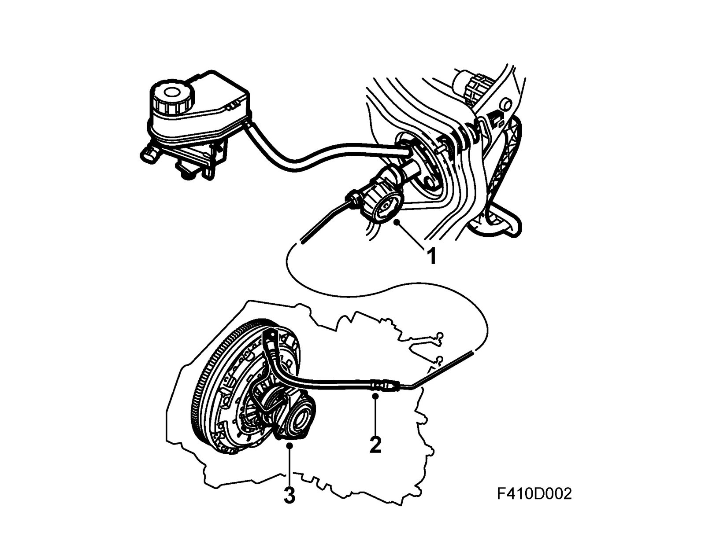
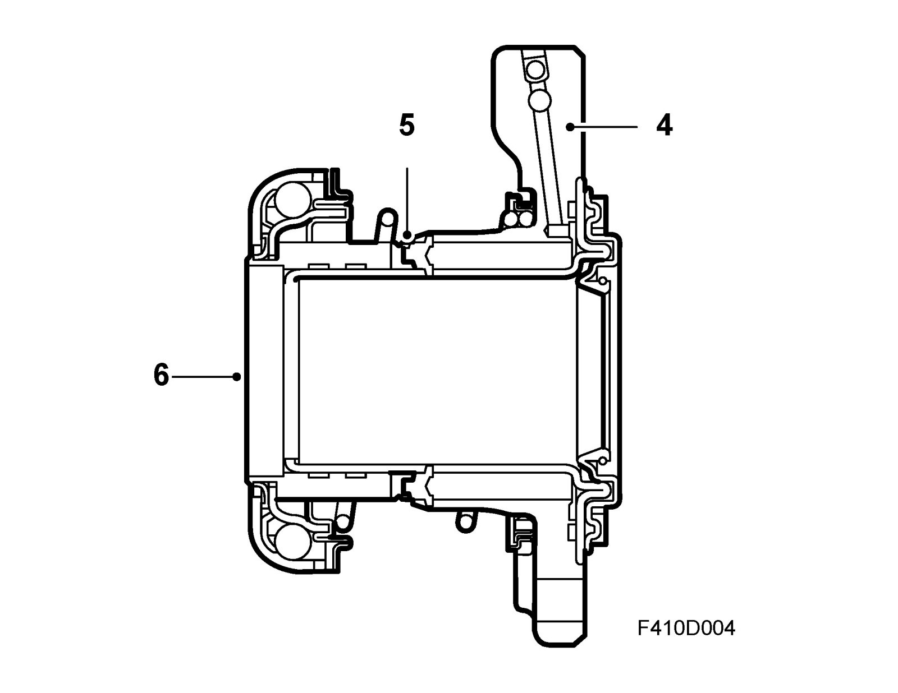

Clutch Operation
Clutch operation
Clutch operation is hydraulic and fully self-adjusting. The unit comprises:
1. Master cylinder
2. Connecting pipes
3. Slave cylinder
The master cylinder is mounted in the bulkhead and is connected to the clutch pedal via a piston rod.
The slave cylinder is an integrated unit mounted in the clutch housing and comprises:

4. Cylinder housing
5. Split piston
6. Fixed release bearing
The slave cylinder cannot be disassembled. The hydraulic pressure from the master cylinder presses on the seal, which then pushed the piston and release bearing against the pressure plate. A spring is mounted between the cylinder housing and the release bearing, which means the release bearing is always pressed against the pressure plate and in this manner reduces the play in the clutch pedal.
In order to prevent dirt from reaching sensitive parts of pistons and seals, a rubber gaiter is mounted between the cylinder and release bearing.
A hydraulic line links the master cylinder and the slave cylinder damper pipe (to reduce pedal vibration) and has a quick-release coupling at each end. The lower quick-release coupling, to the slave cylinder, has a bleed nipple.